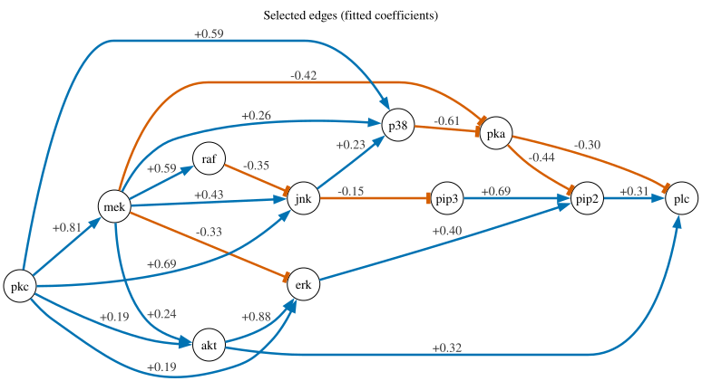
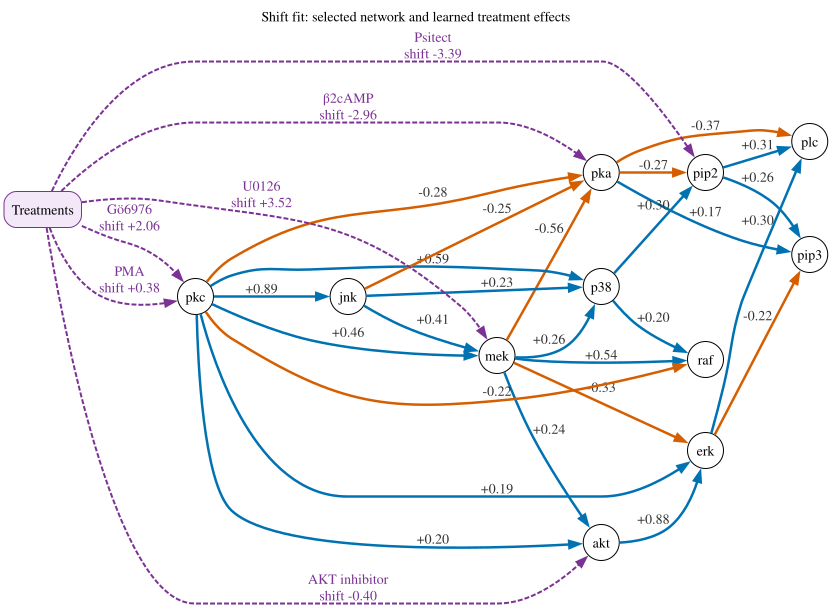

Find an explanatory signaling network in the Sachs data#
How might the measured signals in a cell be related, and how do they respond
when a signaling molecule is perturbed? In this tutorial, we use
LinearDAGDiscovery to fit a small network to single-cell measurements from
the Sachs study. Sachs and colleagues used Bayesian networks; here we use a
linear model. An arrow from one signal to another means that the first
signal helps explain the second in the fitted linear model.
The study used human primary CD4+ T cells. Across experimental conditions, researchers stimulated the cells through CD3 and CD28, sometimes added ICAM-2, or applied compounds that perturb signaling. After 15 minutes, they measured 11 protein and phospholipid signals in individual cells by flow cytometry, a technique that records several signals per cell.
The original study called CD3/CD28 and ICAM-2 general perturbations. In this tutorial, their two conditions are observational with respect to the 11 measured signals: the cells were stimulated, but no measured signal was directly targeted. The intervention conditions use more specific treatments with an annotated target. Together, these conditions show how the signals vary and respond to targeted treatments.
We will load the cell measurements, mark the intervention targets, fit a network, and read its selected arrows. We will then try a second way to model the interventions. The LinearDAGDiscovery guide explains the method and additional modeling options.
Data: Sachs Zenodo record. Original study: Sachs and colleagues (2005).
from pathlib import Path
from IPython.display import display
import numpy as np
import pandas as pd
import corneto as cn
from corneto.backend import CvxpyBackend
from corneto.data import Data
from corneto.datasets import fetch_dataset
from corneto.methods import LinearDAGDiscovery
DATASET_DIR = fetch_dataset("sachs")
DATASET_PATH = DATASET_DIR / "measurements.tsv"
CONDITION_MANIFEST_PATH = DATASET_DIR / "condition_manifest.csv"
NODE_COLUMNS = [
"raf", "mek", "plc", "pip2", "pip3", "erk",
"akt", "pka", "pkc", "p38", "jnk",
]
# Use 100 cells per condition for a quicker run; use None for all cells.
SAMPLES_PER_CONDITION: int | None = 100
MIN_ABS_COEFFICIENT = 0.25
SEED = 7
SOLVE_SECONDS = 300
LAMBDA_UNEXPLAINED = 1.0
1. Load and inspect the measurements#
Each row in the Sachs data represents one cell. The columns below record the signals measured in that cell. Most protein measurements indicate phosphorylation, a chemical change commonly used to track signaling activity. PIP2 and PIP3 are signaling lipids. The values have already been transformed with the natural logarithm.
Column |
Biological measurement |
|---|---|
|
phosphorylated Raf |
|
phosphorylated MEK1/2 |
|
phosphorylated PLCγ |
|
PIP2 abundance |
|
PIP3 abundance |
|
phosphorylated ERK1/2 |
|
phosphorylated Akt |
|
PKA-substrate phosphorylation signal |
|
phosphorylated PKC |
|
phosphorylated p38 |
|
phosphorylated JNK |
The measurement file contains these 11 signals for each cell. A separate condition manifest names the treatment and, when applicable, the measured signal treated as its direct target. The next cell joins the two files and shows the first few rows of the resulting data frame.
def load_sachs_dataframe(path: Path, manifest_path: Path) -> pd.DataFrame:
measurements = pd.read_csv(path, sep="\t")
manifest = pd.read_csv(manifest_path)
blocks = []
cursor = 0
for row in manifest.itertuples(index=False):
if row.start_row != cursor or row.stop_row <= cursor:
raise ValueError("Sachs condition rows must be contiguous.")
block = measurements.iloc[row.start_row:row.stop_row].copy()
if not block["intervention_label"].eq(row.archive_label).all():
raise ValueError(f"Unexpected archive label for {row.condition}.")
block.insert(1, "condition", row.condition)
block.insert(
2,
"intervention_target",
row.intervention_target if pd.notna(row.intervention_target) else None,
)
blocks.append(block)
cursor = row.stop_row
if cursor != len(measurements):
raise ValueError("The condition manifest does not cover every cell.")
return pd.concat(blocks, ignore_index=True)
raw = load_sachs_dataframe(DATASET_PATH, CONDITION_MANIFEST_PATH)
raw[["condition", "intervention_label", "intervention_target", "raf", "mek", "akt"]].head(8).round(2)
| condition | intervention_label | intervention_target | raf | mek | akt | |
|---|---|---|---|---|---|---|
| 0 | cd3cd28 | observational | None | 3.27 | 2.58 | 2.83 |
| 1 | cd3cd28 | observational | None | 3.58 | 2.80 | 3.48 |
| 2 | cd3cd28 | observational | None | 4.08 | 3.79 | 3.48 |
| 3 | cd3cd28 | observational | None | 4.29 | 4.42 | 2.47 |
| 4 | cd3cd28 | observational | None | 3.52 | 2.99 | 3.83 |
| 5 | cd3cd28 | observational | None | 2.93 | 1.32 | 3.25 |
| 6 | cd3cd28 | observational | None | 3.80 | 3.60 | 2.88 |
| 7 | cd3cd28 | observational | None | 3.86 | 2.71 | 3.81 |
The first rows come from the CD3/CD28 condition, which has no annotated
direct target among the measured signals. condition names the treatment,
and intervention_target gives its measured target when there is one.
The archive’s intervention_label sometimes names a different signal, so
the model uses the target supplied by the condition manifest.
2. Choose cells for the analysis#
The full file has 7,466 cells across nine conditions. We leave out the LY294002 condition because it targets PI3K, which is absent from the 11 measured signals. This leaves 6,618 cells in eight conditions.
To keep the fitting time manageable, we select 100 cells from each remaining condition. The next table shows the direct target, number of available cells, and number selected for each condition.
analysis_raw = raw.loc[raw["condition"] != "cd3cd28_ly"].copy()
def stratified_subsample(
frame: pd.DataFrame,
samples_per_condition: int | None,
seed: int,
) -> pd.DataFrame:
"""Keep all rows or take a reproducible sample from each condition."""
if samples_per_condition is None:
return frame.copy().reset_index(drop=True)
if samples_per_condition <= 0:
raise ValueError("samples_per_condition must be positive or None")
rng = np.random.default_rng(seed)
selected = []
for condition, group in frame.groupby("condition", sort=True):
if len(group) > samples_per_condition:
indices = rng.choice(group.index.to_numpy(), size=samples_per_condition, replace=False)
group = group.loc[np.sort(indices)]
selected.append(group.copy())
return pd.concat(selected, ignore_index=True)
sampled = stratified_subsample(analysis_raw, samples_per_condition=SAMPLES_PER_CONDITION, seed=SEED)
condition_summary = raw.groupby("condition", sort=False).agg(
target=("intervention_target", "first"),
available_cells=("condition", "size"),
)
condition_summary["selected_cells"] = sampled.groupby("condition").size()
condition_summary["selected_cells"] = condition_summary["selected_cells"].fillna(0).astype(int)
condition_summary["target"] = condition_summary["target"].fillna("—")
condition_summary
| target | available_cells | selected_cells | |
|---|---|---|---|
| condition | |||
| cd3cd28 | — | 853 | 100 |
| cd3cd28_icam2 | — | 902 | 100 |
| cd3cd28_aktinhib | akt | 911 | 100 |
| cd3cd28_g0076 | pkc | 723 | 100 |
| cd3cd28_psitect | pip2 | 810 | 100 |
| cd3cd28_u0126 | mek | 799 | 100 |
| cd3cd28_ly | — | 848 | 0 |
| pma | pkc | 913 | 100 |
| b2camp | pka | 707 | 100 |
A dash in the target column means the condition has no annotated direct
target among the measured signals. The two general-stimulation conditions
contribute 200 cells; the six targeted-treatment conditions contribute
600. Each selected cell remains a separate observation. Set
SAMPLES_PER_CONDITION=None to use all 6,618 retained cells.
3. Describe possible connections and interventions#
The Sachs pathway diagram also shows CD3, CD28, ZAP70, PI3K, and other
components absent from these measurements. Here we model the 11 measured
signals: LinearDAGDiscovery requires observations for every graph vertex.
An inferred arrow can therefore summarize a path through unmeasured
components.
Before fitting, we give CORNETO a set of possible arrows between the
measured signals. For this example, we allow an arrow between every
pair of different signals, in either direction: 110 candidates. The
optimizer will select a smaller set without loops that lead back to
a starting signal. An interaction value of 0 leaves each arrow’s
sign open to be learned from the measurements.
We then turn each cell into a CORNETO sample. Its 11 measured values
map to the 11 graph vertices. For a treated cell, we mark the directly
targeted signal with intervention="hard". The fit uses its measured
value when explaining other signals and skips the target’s own equation.
Cells receiving the same treatment share an intervention_group, while
each cell keeps its own measurements. See the guide’s
intervention metadata table
for the accepted fields and the alternative shift intervention.
prior_edges = [
(source, 0, target)
for source in NODE_COLUMNS
for target in NODE_COLUMNS
if source != target
]
prior = cn.Graph.from_tuples(prior_edges)
def to_corneto_data(frame: pd.DataFrame, intervention_mode: str = "hard") -> Data:
if intervention_mode not in {"hard", "shift"}:
raise ValueError("intervention_mode must be 'hard' or 'shift'")
samples = {}
for sample_index, row in frame.iterrows():
condition = str(row["condition"])
target = row["intervention_target"]
sample_name = f"sachs_{sample_index:04d}_{condition}"
samples[sample_name] = {}
for node in NODE_COLUMNS:
feature = {"mapping": "vertex", "value": float(row[node])}
if pd.notna(target) and node == target:
feature["intervention"] = intervention_mode
feature["intervention_group"] = condition
samples[sample_name][node] = feature
return Data.from_cdict(samples)
data = to_corneto_data(sampled)
targeted_cells = sampled.loc[sampled["intervention_target"].notna()]
pd.Series(
{
"measured signals": prior.num_vertices,
"candidate arrows": prior.num_edges,
"cells used": len(data.samples),
"targeted conditions": targeted_cells["condition"].nunique(),
},
name="value",
)
measured signals 11
candidate arrows 110
cells used 800
targeted conditions 6
Name: value, dtype: int64
4. Fit the network#
The model predicts each signal from a weighted sum of signals with
arrows pointing to it. We favor fewer arrows, allow at most three
arrows into each signal, and require selected arrows to have a
normalized coefficient of at least 0.25. We also favor connections
from treated targets to measured responses. The guide explains these
model choices in detail.
This example uses GUROBI with a 300-second time limit. The result
shows how many arrows were selected and the solver status. A status of
user_limit means the time limit was reached; the selected network
may improve with more solve time.
The guide’s prediction workflow shows how to assess a fitted model on held-out cells or conditions.
def selected_edge_count(problem) -> int | None:
values = problem.expr.edge_selected.value
if values is None:
return None
return int((np.asarray(values).reshape(-1) > 0.5).sum())
def require_usable_solution(problem, solved) -> None:
if solved.value is None or not np.isfinite(solved.value):
raise RuntimeError(f"The solver returned no usable solution ({solved.status}).")
if problem.expr.edge_selected.value is None:
raise RuntimeError(f"The solver returned no edge-selection values ({solved.status}).")
def fit_summary(label: str, problem, solved) -> dict:
return {
"intervention model": label,
"solver status": str(solved.status),
"selected arrows": selected_edge_count(problem),
"solve time (s)": getattr(solved.solver_stats, "solve_time", None),
}
def fit_model(fit_data: Data, **method_options):
method = LinearDAGDiscovery(
lambda_edges=0.03,
max_parents=3,
min_abs_coefficient=MIN_ABS_COEFFICIENT,
lambda_unexplained=LAMBDA_UNEXPLAINED,
backend=CvxpyBackend(),
**method_options,
)
problem = method.build(prior, fit_data)
solved = problem.solve(
solver="GUROBI",
max_seconds=SOLVE_SECONDS,
verbosity=0,
IntegralityFocus=1,
)
require_usable_solution(problem, solved)
return method, problem, solved
exact_method, exact_problem, exact_solved = fit_model(data)
hard_fit_summary = pd.DataFrame([fit_summary("hard", exact_problem, exact_solved)])
hard_fit_summary
| intervention model | solver status | selected arrows | solve time (s) | |
|---|---|---|---|---|
| 0 | hard | user_limit | 22 | 300.045893 |
5. Examine the selected arrows#
Each row of the table below is an arrow in the fitted network.
coefficient tells us how much the model’s predicted target signal
changes when its source signal increases by one unit, with the other
selected inputs held fixed. normalized_coefficient rescales that
slope so the 0.25 threshold can be applied across signal pairs.
The sign column summarizes whether the fitted relationship is
positive or negative. The guide explains the remaining
edge fields.
def solution_edge_table(method) -> pd.DataFrame:
graph = method.get_solution_graph()
rows = []
for edge_index, (source_set, target_set) in enumerate(graph.E):
attributes = graph.get_attr_edge(edge_index)
rows.append(
{
"source": next(iter(source_set)),
"target": next(iter(target_set)),
"coefficient": attributes["coefficient"],
"normalized_coefficient": attributes["normalized_coefficient"],
"sign": "positive" if attributes["coefficient"] > 0 else "negative",
}
)
columns = ["source", "target", "coefficient", "normalized_coefficient", "sign"]
result = pd.DataFrame(rows, columns=columns)
if result.empty:
return result
return result.sort_values("normalized_coefficient", key=np.abs, ascending=False)
exact_edges = solution_edge_table(exact_method)
exact_edges
| source | target | coefficient | normalized_coefficient | sign | |
|---|---|---|---|---|---|
| 1 | mek | raf | 0.593970 | 0.923388 | positive |
| 11 | akt | erk | 0.878460 | 0.820500 | positive |
| 14 | pkc | mek | 0.807502 | 0.638058 | positive |
| 18 | pkc | jnk | 0.690871 | 0.608625 | positive |
| 17 | pkc | p38 | 0.591843 | 0.570519 | positive |
| 19 | p38 | pka | -0.611769 | -0.567900 | negative |
| 2 | mek | erk | -0.332300 | -0.546553 | negative |
| 6 | mek | jnk | 0.428736 | 0.477999 | positive |
| 4 | mek | pka | -0.417555 | -0.472875 | negative |
| 3 | mek | akt | 0.243035 | 0.427971 | positive |
| 7 | pip2 | plc | 0.308420 | 0.406950 | positive |
| 13 | pka | pip2 | -0.441460 | -0.403002 | negative |
| 8 | pip3 | pip2 | 0.688153 | 0.374042 | positive |
| 12 | pka | plc | -0.299091 | -0.360261 | negative |
| 5 | mek | p38 | 0.257965 | 0.314708 | positive |
| 16 | pkc | akt | 0.194190 | 0.270202 | positive |
| 20 | jnk | pip3 | -0.146542 | -0.250000 | negative |
| 0 | raf | jnk | -0.348597 | -0.250000 | negative |
| 15 | pkc | erk | 0.192363 | 0.250000 | positive |
| 10 | akt | plc | 0.322730 | 0.250000 | positive |
| 9 | erk | pip2 | 0.397735 | 0.250000 | positive |
| 21 | jnk | p38 | 0.228470 | 0.250000 | positive |
The network plot makes the table easier to scan: blue arrows have positive fitted coefficients, orange arrows have negative ones, and labels show their coefficient values. Pick an arrow in the plot and find the same source and target in the table. A positive coefficient means the model predicts a higher target signal when its source is one unit higher on the log scale, with the other selected inputs held fixed; a negative coefficient means it predicts a lower target signal. These are slopes in the fitted equations. Biological interpretation requires the assumptions discussed in the guide.
solution_graph = exact_method.get_solution_graph()
edge_styles = {}
for edge_index, row in exact_edges.iterrows():
edge_styles[int(edge_index)] = {
"color": "#0072B2" if row["coefficient"] >= 0 else "#D55E00",
"fontcolor": "#333333",
"label": f"{row['coefficient']:+.2f}",
"penwidth": "2.5",
}
assert set(edge_styles) == set(range(solution_graph.num_edges))
display(
solution_graph.plot(
renderer="graphviz",
custom_edge_attr=edge_styles,
graph_attr={"rankdir": "LR", "label": "Selected edges (fitted coefficients)", "labelloc": "t"},
)
)

6. Try another intervention model#
So far, we modeled each treated target as externally fixed. Here we
keep its usual equation and let the treatment add an offset. The next
cell marks those targets with intervention="shift" and estimates
one offset for each target and treatment condition.
The first output compares the solver status and number of selected arrows in the two fits. The second lists the estimated offsets. A positive offset raises the target’s predicted value; a negative offset lowers it. These values are on the log-measurement scale and describe the fitted condition effect, not the drug dose.
shift_data = to_corneto_data(sampled, intervention_mode="shift")
shift_method, shift_problem, shift_solved = fit_model(
shift_data,
intervention_shift_bound=4.0,
lambda_intervention_shifts=0.1,
)
shift_fit_summary = pd.DataFrame([fit_summary("additive shift", shift_problem, shift_solved)])
# The fitted offset for each treated cell is stored by vertex and sample.
shift_values = np.asarray(shift_problem.expr.intervention_shift.value)
shift_rows = []
for condition, cells in targeted_cells.groupby("condition", sort=True):
target = cells["intervention_target"].iloc[0]
target_index = list(prior.V).index(target)
offsets = shift_values[target_index, cells.index.to_numpy()]
if not np.allclose(offsets, offsets[0]):
raise RuntimeError(f"Inconsistent fitted shifts for {condition}.")
shift_rows.append(
{
"condition": condition,
"target": target,
"estimated log-scale shift": float(offsets[0]),
}
)
display(pd.concat([hard_fit_summary, shift_fit_summary], ignore_index=True))
pd.DataFrame(shift_rows)
| intervention model | solver status | selected arrows | solve time (s) | |
|---|---|---|---|---|
| 0 | hard | user_limit | 22 | 300.045893 |
| 1 | additive shift | user_limit | 25 | 300.066989 |
| condition | target | estimated log-scale shift | |
|---|---|---|---|
| 0 | b2camp | pka | -2.963049 |
| 1 | cd3cd28_aktinhib | akt | -0.396231 |
| 2 | cd3cd28_g0076 | pkc | 2.058811 |
| 3 | cd3cd28_psitect | pip2 | -3.389326 |
| 4 | cd3cd28_u0126 | mek | 3.518794 |
| 5 | pma | pkc | 0.383895 |
The plot below shows the network selected by the shift fit. Solid blue and orange arrows connect measured signals; their labels are fitted coefficients. Dashed purple arrows show the treatments. Each is labeled with the treatment name and its learned shift, and points to the measured target. Two treatments point to PKC because each has its own estimated effect on that signal. The purple Treatments box only groups these experimental conditions in the picture; it is not a measured signal or a variable in the fitted network.
shift_edges = solution_edge_table(shift_method)
shift_plot = shift_method.get_solution_graph().copy()
shift_edge_styles = {}
for edge_index, row in shift_edges.iterrows():
shift_edge_styles[int(edge_index)] = {
"color": "#0072B2" if row["coefficient"] >= 0 else "#D55E00",
"fontcolor": "#333333",
"label": f"{row['coefficient']:+.2f}",
"penwidth": "2.5",
}
treatment_labels = {
"b2camp": "β2cAMP",
"cd3cd28_aktinhib": "AKT inhibitor",
"cd3cd28_g0076": "Gö6976",
"cd3cd28_psitect": "Psitect",
"cd3cd28_u0126": "U0126",
"pma": "PMA",
}
treatment_vertex = "treatment_conditions"
for row in shift_rows:
edge_index = shift_plot.add_edge(treatment_vertex, row["target"])
shift_edge_styles[edge_index] = {
"color": "#7B3294",
"fontcolor": "#7B3294",
"style": "dashed",
"label": f"{treatment_labels[row['condition']]}\nshift {row['estimated log-scale shift']:+.2f}",
"penwidth": "2",
}
display(
shift_plot.plot(
renderer="graphviz",
custom_edge_attr=shift_edge_styles,
custom_vertex_attr={
treatment_vertex: {
"label": "Treatments",
"shape": "box",
"style": "rounded,filled",
"fillcolor": "#F3E8F8",
"color": "#7B3294",
"fixedsize": "false",
}
},
graph_attr={"rankdir": "LR", "label": "Shift fit: selected network and learned treatment effects", "labelloc": "t"},
)
)

7. Final comments#
We turned single-cell measurements and treatment annotations into two fitted networks. Their selected arrows and coefficients describe relationships that help explain the measured signals under each model. The dashed treatment arrows in the shift plot show estimated offsets, not additional signaling pathways. These results provide hypotheses about signaling rather than a verified biological pathway.
For a biological analysis, compare predictions on held-out data and repeat the fit with different cell samples, candidate interactions, model settings, and solve times. Then examine which arrows remain stable.